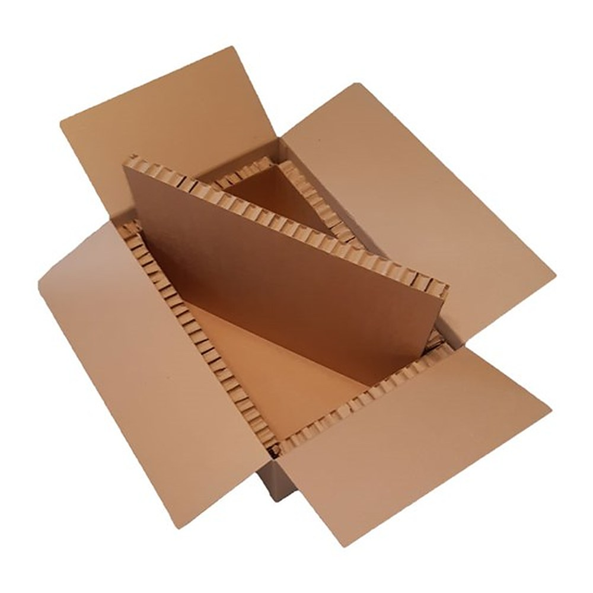
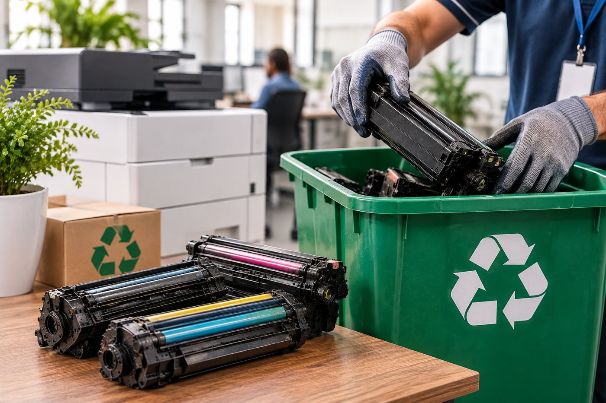

Recolhimento na sua empresa
Realizamos a coleta dos cartuchos e toners utilizados diretamente nas instalações dos nossos clientes, de forma prática, sem custo adicional e sem burocracia.
Sustentabilidade
Inovação e responsabilidade ambiental caminham lado a lado na Executiva. Adotamos práticas que reduzem impactos, incentivam o uso consciente dos recursos e dão destino adequado a materiais e equipamentos.
Nosso compromisso
Na Executiva, acreditamos que a inovação também deve caminhar ao lado da responsabilidade ambiental. Por isso, adotamos práticas que contribuem para a redução de impactos ambientais, o uso consciente de recursos e a preservação do meio ambiente.
Nosso compromisso vai além da prestação de serviços. Trabalhamos para incorporar atitudes mais sustentáveis à nossa operação, promovendo a economia circular, a redução de resíduos e a destinação ambientalmente adequada de materiais e equipamentos.
Materiais e equipamentos ganham novos ciclos de uso em vez de se tornarem resíduo.
Revisamos processos e materiais para gerar menos descarte na nossa operação.
Toners, cartuchos e equipamentos são encaminhados a parceiros especializados.
Cada mudança representa um passo importante na construção de um futuro mais consciente.

Nova etapa
Estamos em uma nova etapa dessa jornada: a substituição gradual dos suportes de isopor por suportes de papelão, uma alternativa mais sustentável que busca reduzir o uso de materiais de difícil decomposição e incentivar soluções com menor impacto ambiental.
A troca acontece de forma gradual, acompanhando o ciclo de renovação dos nossos equipamentos e materiais.
IsoporMaterial de difícil decomposição
PapelãoMenor impacto ambiental

Recolhimento de toners
Durante o ciclo de locação dos equipamentos de impressão, a Executiva realiza o recolhimento dos cartuchos e toners utilizados, encaminhando esses materiais a parceiros especializados para a destinação ambientalmente adequada.
Essa iniciativa evita o descarte inadequado, contribui para a redução de resíduos e fortalece as práticas de logística reversa, transformando materiais que seriam descartados em oportunidades de reaproveitamento e reciclagem.
Nossas práticas incluem
Realizamos a coleta dos cartuchos e toners utilizados diretamente nas instalações dos nossos clientes, de forma prática, sem custo adicional e sem burocracia.
Os materiais recolhidos são encaminhados a parceiros homologados, preparados para realizar o tratamento e a reciclagem de componentes como plásticos, metais e resíduos de tinta.
Adotamos práticas alinhadas aos princípios da Política Nacional de Resíduos Sólidos (Lei nº 12.305/2010), incentivando a responsabilidade compartilhada e a destinação correta dos resíduos.
Buscamos garantir a rastreabilidade e a documentação pertinente ao encaminhamento dos materiais, proporcionando mais transparência e segurança aos nossos clientes.
Nosso compromisso é contínuo
Acreditamos que sustentabilidade não é apenas uma iniciativa, mas uma responsabilidade construída diariamente.
Da reciclagem de suprimentos à substituição de materiais utilizados em nossas operações, a Executiva segue buscando alternativas que conciliem tecnologia, eficiência e respeito ao meio ambiente.
Executiva – Soluções Digitais.
Inovação que transforma. Responsabilidade que faz a diferença.
Fale com a Executiva e agende a coleta de toners usados ou a destinação adequada dos equipamentos que já chegaram ao fim da vida útil.